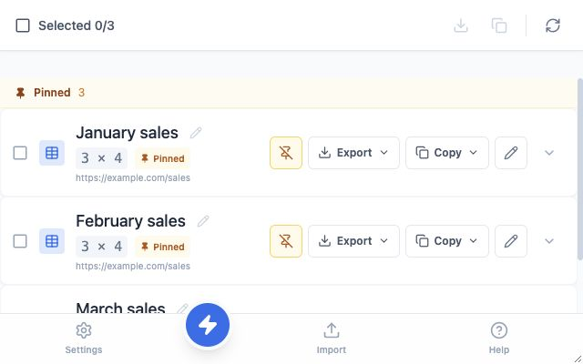
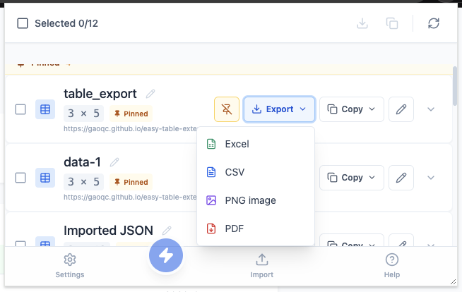
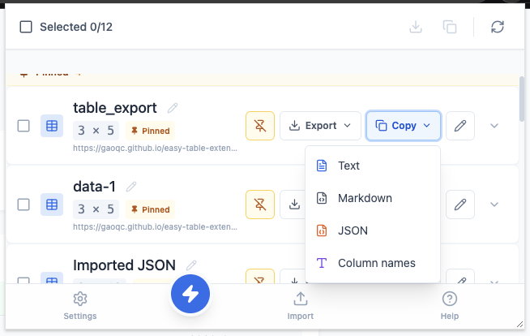
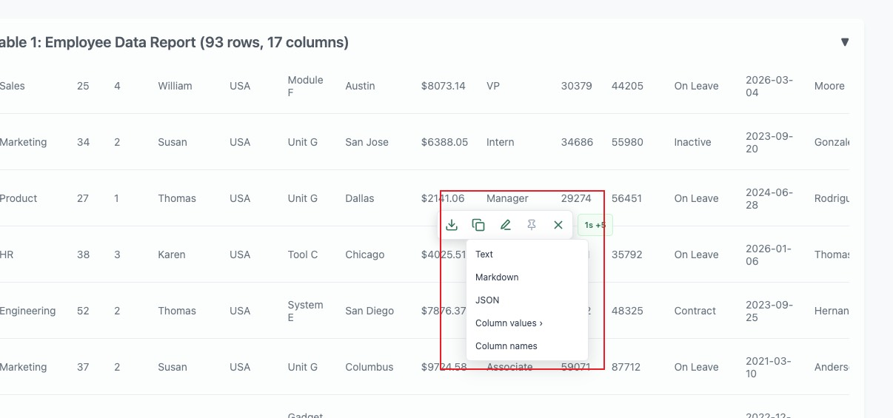
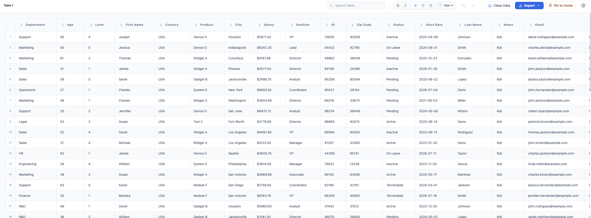
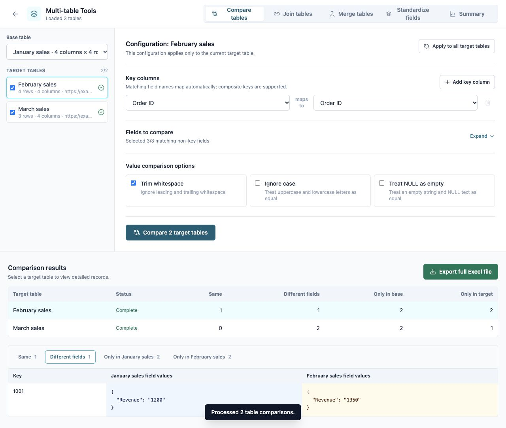
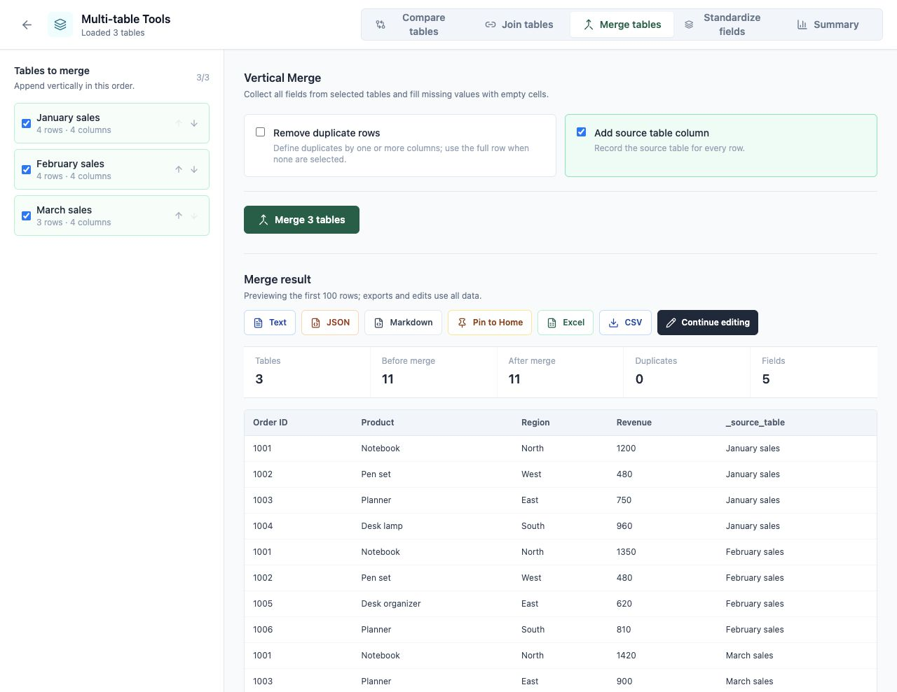
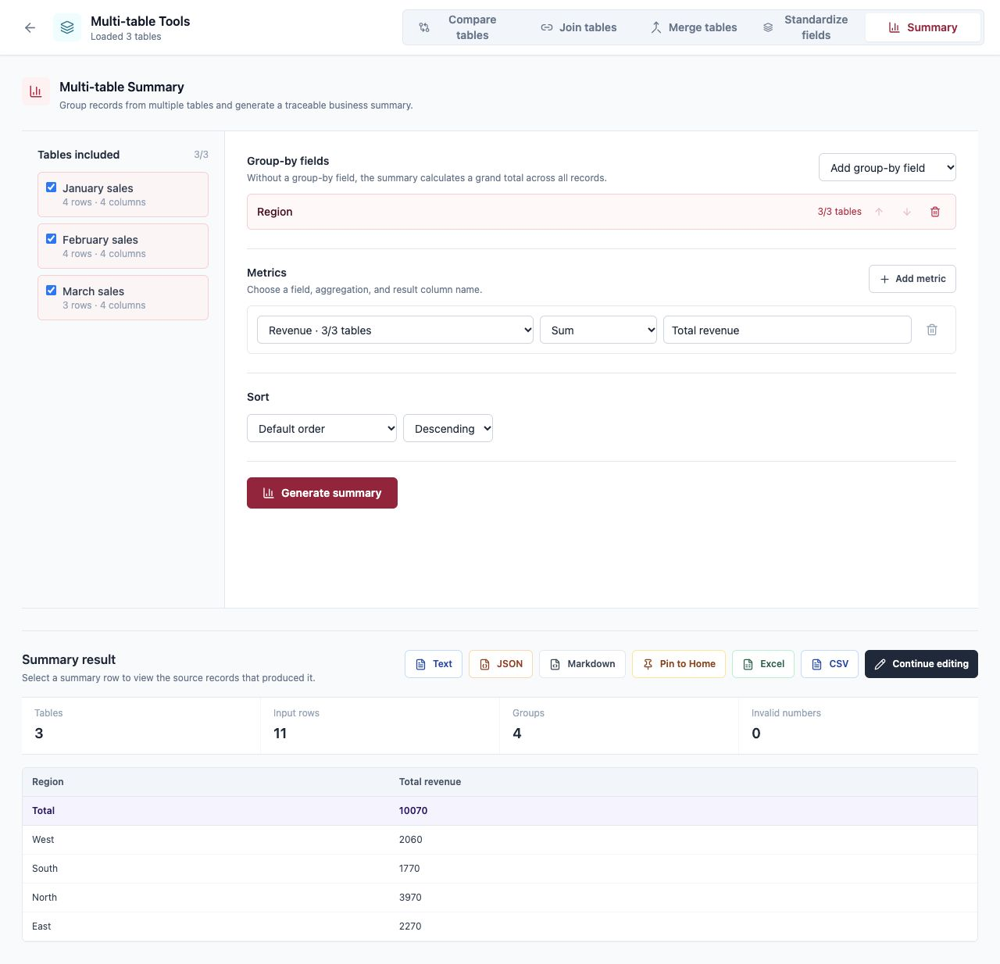

Introducing Easy Table 2.0
Extract, edit, compare, and combine tables in your browser. Easy Table 2.0 takes you from web data to a ready-to-use result.
Want to try it yourself? Open our Demo Page and see the magic!
Easy Table 2.0 shown with example sales data








Everyday table tools
Find, prepare, and share table data in a few clicks.
Detect and preview tables on web pages, or import your own CSV, Excel, and clipboard data.
Download tables as Excel, CSV, PDF, or PNG. Export multiple tables together when you need them.
Copy tables as plain text, Markdown, or JSON, and import supported data from the clipboard.
Edit cells, remove rows or columns, sort data, and rename columns before sharing or exporting.
Use the floating toolbar on a page and pin tables to Home for later use.
More ways to work with data
Compare, combine, and analyze data across tables in Easy Table 2.0.
Match records by key columns, review differences and extra rows, and compare one base table with multiple targets.
Connect tables using matching key fields and choose which columns to include in the result.
Combine rows from multiple tables, optionally remove duplicates, and retain the source of each row.
Map different column names to a common structure across tables.
Group records and calculate sums, counts, averages, minimums, and maximums. Inspect the source rows behind each group.
Generate batch INSERT statements for MySQL, Oracle, or OceanBase in Oracle-compatible mode, and process column values and names.
Table processing happens locally in your browser. Read the privacy policy.